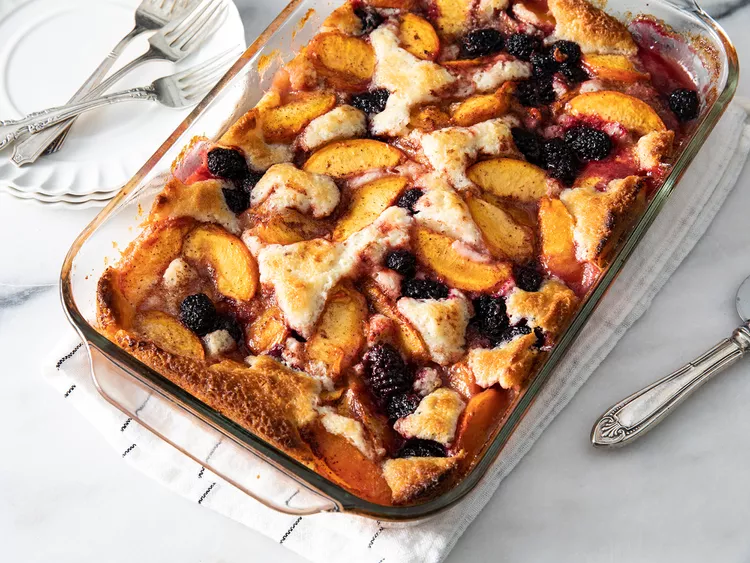

Peach and Blackberry Cobbler

This sweet, cakey cobbler with fresh blackberries and juicy peaches is perfect for any summer occasion. Once you make
this recipe, you will be asked for it again and again!
Ingredients
- 4 cups peeled and sliced fresh peaches
- 1 cup fresh blackberries
- ¼ cup white sugar
- 1 teaspoon ground cinnamon
- 1 tablespoon lemon juice
- ½ cup butter, melted
- 1 ¼ cups all-purpose flour
- 1 cup white sugar
- 2 teaspoons baking powder
- ½ teaspoon salt
- 1 cup milk
Directions
- Step 1
- Preheat the oven to 350 degrees F (175 degrees C).
- Step 2
- Mix peaches, blackberries, 1/4 cup sugar, cinnamon, and lemon juice in a bowl.
- Step 3
- Pour butter into a 9x13-inch glass baking dish and evenly coat the bottom and sides. Whisk flour, 1 cup sugar, baking
powder, and salt in a bowl; mix in milk, stirring just to moisten dry ingredients. Pour batter into prepared baking dish
and distribute fruit mixture evenly over the batter.
- Step 4
- Bake in the preheated oven until cobbler is golden brown, about 45 minutes.